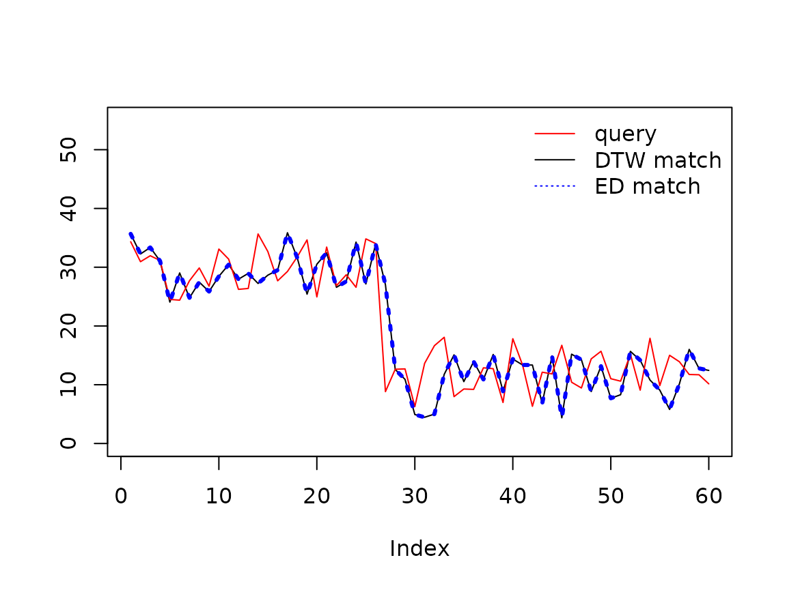
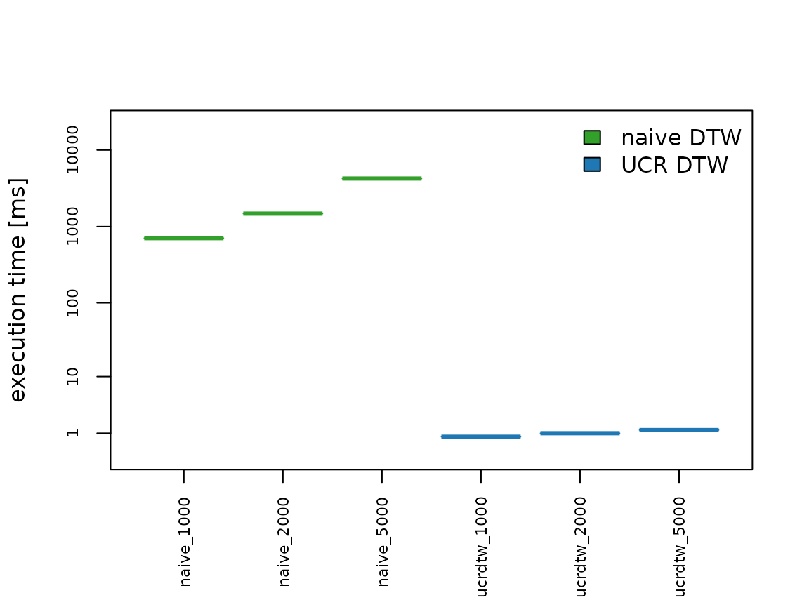

vignettes/using_rucrdtw.Rmd
using_rucrdtw.RmdDynamic Time Warping (DTW) methods provide algorithms to optimally map a given time series onto all or part of another time series (Berndt and Clifford 1994). The remaining cumulative distance between the series after the alignment is a useful distance metric in time series data mining applications for tasks such as classification, clustering, and anomaly detection.
Calculating a DTW alignment is computationally relatively expensive, and as a consequence DTW is often a bottleneck in time series data mining applications. The UCR Suite (Rakthanmanon et al. 2012) provides a highly optimized algorithm for best-match subsequence searches that avoids unnecessary distance computations and thereby enables fast DTW and Euclidean Distance queries even in data sets containing trillions of observations.
A broad suite of DTW algorithms is implemented in R in the dtw
package (Giorgino 2009). The
rucrdtw R package provides complementary functionality for
fast similarity searches by providing R bindings for the UCR Suite via
Rcpp (Eddelbuettel and Francois
2011). In addition to queries and data stored in text files,
rucrdtw also implements methods for queries and/or data
that are held in memory as R objects, as well as a method to do fast
similarity searches against reference libraries of time series.
Install rucrdtw from GitHub:
install.packages("devtools")
devtools::install_github("pboesu/rucrdtw")Load rucrdtw package:
create a random long time series
Pick a random subsequence of 100 elements as a query
Since both query and data are R vectors, we use the vector-vector methods for the search.
system.time(dtw_search <- ucrdtw_vv(data = rwalk, query = query, dtwwindow = 0.05))## user system elapsed
## 1.423 0.002 1.425
all.equal(qstart, dtw_search$location)## [1] TRUE
system.time(ed_search <- ucred_vv(data = rwalk, query = query))## user system elapsed
## 0.671 0.000 0.670
all.equal(qstart, ed_search$location)## [1] TRUEAnd in a matter of seconds we have searched 10 million data points and rediscovered our query!
Searching for an exact match, however, is somewhat artificial. The real power of the similarity search is finding structurally similar subsequences in complex sets of time series. To demonstrate this we load an example data set:
data("synthetic_control")This data set contains 600 time series of length 60 from 6 classes
(Alcock et al. 1999). The data set
documentation contains further information about these data. It can be
displayed using the command ?synthetic_control. We can plot
an example of each class
par(mfrow = c(3,2),
mar = c(1,1,1,1))
classes = c("Normal", "Cyclic", "Increasing", "Decreasing", "Upward shift", "Downward shift")
for (i in 1:6){
plot(synthetic_control[i*100-99,], type = "l", xaxt = "n", yaxt = "n", ylab="", xlab = "", bty="n", main=classes[i])
}Since we are now comparing a query against a set of time series, we
only need to do comparisons for non-overlapping data sequences. The
matrix-vector methods ucrdtw_mv and ucred_mv
provide this functionality.
We can demonstrate this by removing a query from the data set, and then searching for a closest match:
index <- 600
query <- synthetic_control[index,]
dtw_search <- ucrdtw_mv(synthetic_control[-index,], query, 0.05, byrow = TRUE)
ed_search <- ucred_mv(synthetic_control[-index,], query, byrow= TRUE)And plot the results:
plot(synthetic_control[dtw_search$location,], type="l", ylim=c(0,55), ylab="")
lines(query, col="red")
lines(synthetic_control[ed_search$location,], col="blue", lty=3, lwd=3)
legend("topright", legend = c("query", "DTW match", "ED match"), col=c("red", "black", "blue"), lty=c(1,1,3), bty="n")
We can compare the speed-up achieved with the UCR algorithm by
comparing it to a naive sliding-window comparison with the
dtw function from the dtw
package (Giorgino 2009). We create
another time series and load dtw.
set.seed(123)
rwalk <- cumsum(runif(5e3, min = -0.5, max = 0.5))
qstart <- 876
query <- rwalk[qstart:(qstart+99)]
library(dtw)ucrdtw uses a Sakoe-Chiba Band for the DTW calculation.
We therefore create a small function that executes a sliding window
search using the same DTW criteria.
naive_dtw <- function(data, query){
n_comps <- (length(data)-length(query)+1)
dtw_dist <- numeric(n_comps)
for (i in 1:n_comps){
dtw_dist[i] <- dtw(query, data[i:(i+length(query)-1)], distance.only = TRUE, window.type="sakoechiba", window.size=5)$distance
}
which.min(dtw_dist)
}Finally, we run the comparison across three time-series ranging from
1000 to 5000 elements, and plot the result. This comparisons requires
the rbenchmark package.
if(require(rbenchmark)){
benchmarks <- rbenchmark::benchmark(
naive_1000 = naive_dtw(rwalk[1:1000], query),
naive_2000 = naive_dtw(rwalk[1:2000], query),
naive_5000 = naive_dtw(rwalk, query),
ucrdtw_1000 = ucrdtw_vv(rwalk[1:1000], query, 0.05),
ucrdtw_2000 = ucrdtw_vv(rwalk[1:2000], query, 0.05),
ucrdtw_5000 = ucrdtw_vv(rwalk, query, 0.05),
replications = 5)
#ensure benchmark test column is of type factor for compatibility with r-devel
benchmarks$test <- as.factor(benchmarks$test)
colors <- rep(c("#33a02c","#1f78b4"), each=3)
#plot with log1p transformed axes, as some execution times may be numerically zero
plot(log1p(benchmarks$elapsed*200) ~ benchmarks$test, cex.axis=0.7, las = 2, yaxt = "n", xlab = "", ylab = "execution time [ms]", ylim = c(0,10), medcol = colors, staplecol=colors, boxcol=colors)
axis(2, at = log1p(c(1,10,100,1000,10000)), labels = c(1,10,100,1000,10000), cex.axis = 0.7)
legend("topright", legend = c("naive DTW", "UCR DTW"), fill = c("#33a02c","#1f78b4"), bty="n")
}## Loading required package: rbenchmark
The speed-up is approximately 3 orders of magnitude.